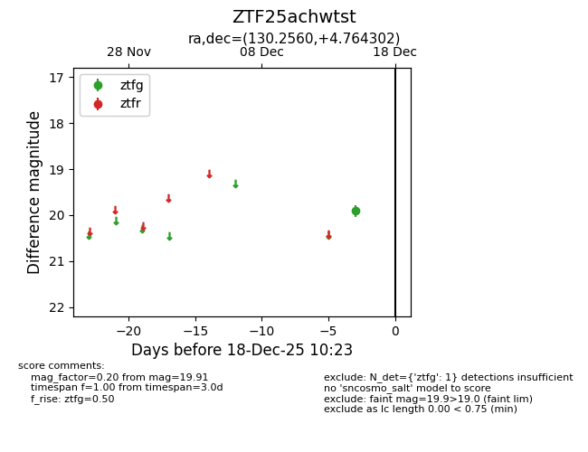
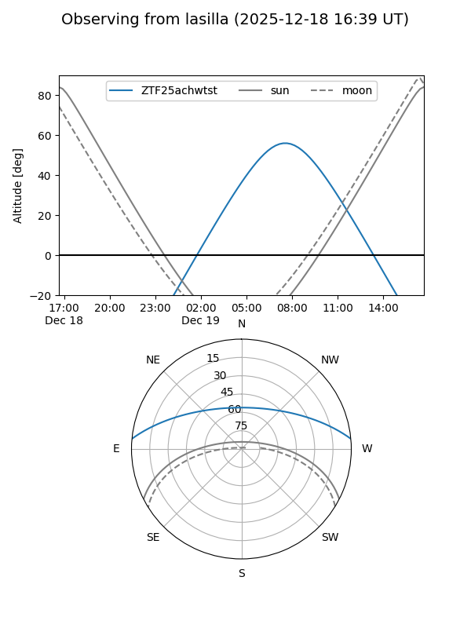
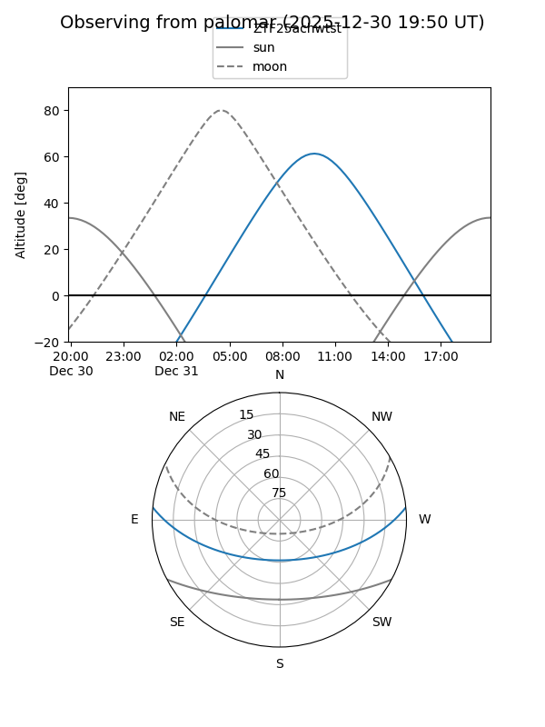

ZTF25achwtst
Target ZTF25achwtst at 2025-12-31 18:00
Aliases and brokers:
FINK: link
Lasair: link
ALeRCE: link
alt names
ZTF25achwtst (ztf,fink_ztf)
Coordinates:
equatorial (ra, dec) = 130.2560,+4.76430
equatorial (HMS+DMS) = 08:41:01.43,+04:45:51.49
galactic (l, b) = (221.6183,+26.48615)
Flags:
Photometry:
last ztfg=19.91
1 ztfg detections
Lightcurve

Visibility


Additional plots